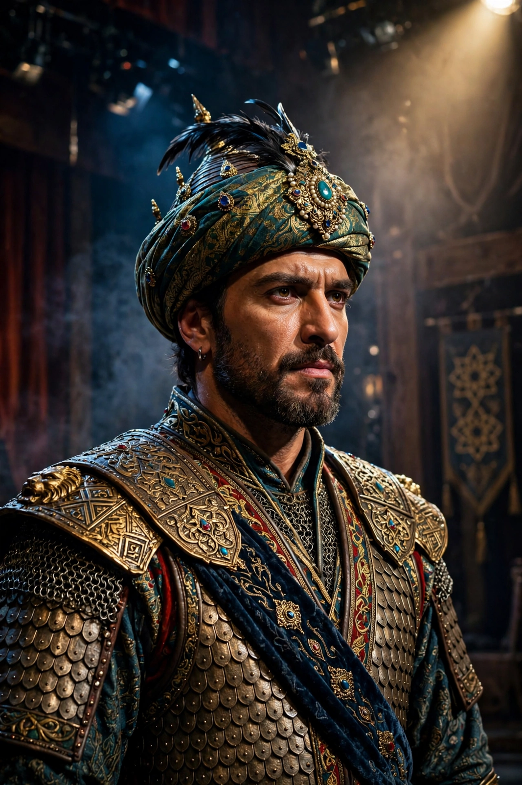

Tamburlaine
| Tamburlaine | |
|---|---|
 | |
| Written by | Christopher Marlowe |
| Date premiered | c. 1587–1588 |
| First published | 1590 |
| Genre | Tragedy |
| Setting | Persia, Turkey, Egypt, Damascus |
Tamburlaine the Great is a play in two parts by Christopher Marlowe, first performed around 1587–1588 and published in 1590. Loosely based on the life of the Central Asian conqueror Timur (Tamerlane), it tells of a Scythian shepherd who rises to conquer kingdoms across Asia and Africa. It was a landmark of the early modern English stage and established blank verse as the dramatic medium of choice, in Marlowe's celebrated "mighty line".
Plot
In Part 1, the shepherd Tamburlaine throws off his humble garb, defeats the Persian king Mycetes and his brother Cosroe, and courts Zenocrate, daughter of the Soldan of Egypt. He humiliates the Turkish emperor Bajazeth, keeping him in a cage, and has himself crowned in Damascus, where his ruthlessness — slaughtering the city's virgins after they plead for mercy — contrasts with his love for Zenocrate, whom he marries.
Part 2 follows Tamburlaine's further conquests, the death of Zenocrate, his burning of the town where she died, the killing of his own son Calyphas for cowardice, and his final illness after burning copies of the Quran. He dies pointing at a map of the world, lamenting the lands left unconquered.
Significance
First performed by the Admiral's Men with Edward Alleyn in the title role, Tamburlaine transformed English popular drama: its rhetoric, scale and ambition set the template that Shakespeare and others followed. Critics debate whether the play endorses or ironises its hero's ambition; T. S. Eliot called Marlowe's verse a "savage comic humour" and the play remains frequently revived.